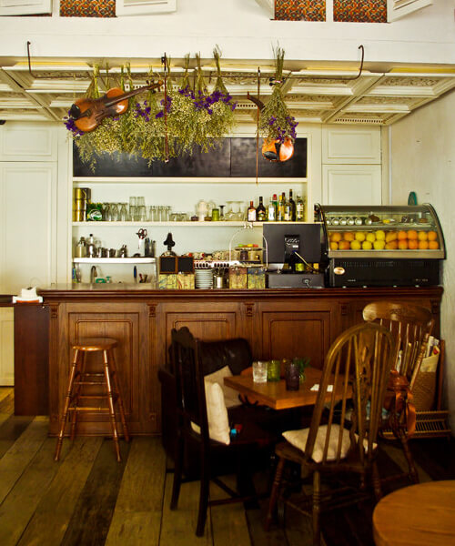

随着科技的发展，一些公司特别是科技公司的办公模式发生了变化，远程办公不再是科幻电影里的故事情节。Toptal的负责人Luboš Volkov就远程办公谈了他的看法。
远程办公分为 “远程” 和 “办公” 两个部分，是利用现代互联网技术实现非本地办公的一种新型办公模式。虽然远程办公目前来看还是比较新奇的一种工作模式，但据报道显示，在 2020年，大约有 50%的科技公司将会有超过 30%的员工将实现远程办公。这听起来似乎有些疯狂，但无论是员工还是公司，都会从远程办公中获得收益。
请记住，远程办公和在办公室里办公不同。你身边没有其他的同事，你不能和他们边喝咖啡边闲聊。你需要培养一个远程办公室的正确心态，有时候你可能会觉得孤单。但你会有很多和同事或是朋友联系的方式，譬如聚会、Skype 和 Slack 等。
你需要成为可以处理好这些事情的强大的个体。因此远程办公并不是适合每一个人。
 137
137